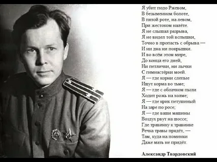
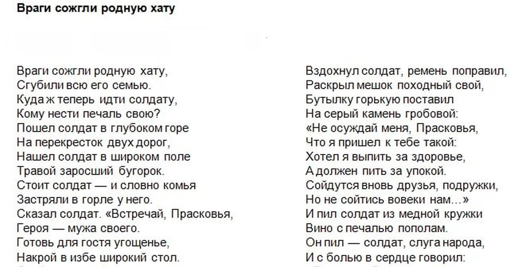
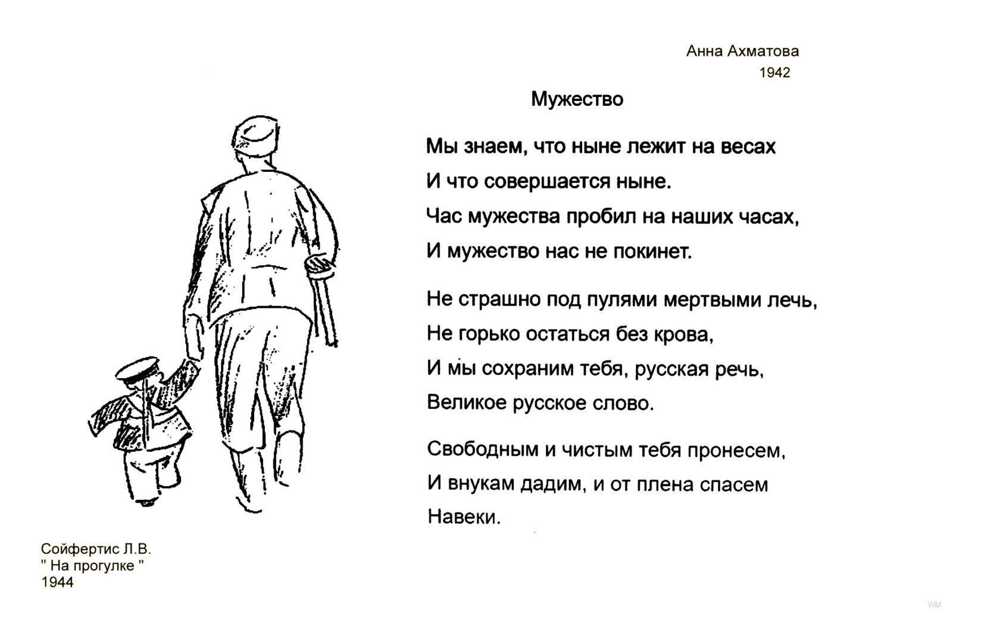
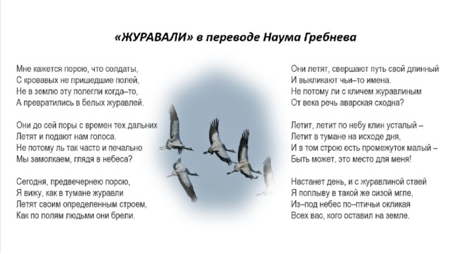

Стихотворения
«Я убит подо Ржевом»
Автор: А.Т. Твардовский
Дата создания: 1945–1946 годы
Описание: Стихотворение от лица погибшего солдата, обращающегося к живым. Написано после поездки Твардовского под Ржев, где в 1942–1943 годах шли ожесточённые бои без точного учёта потерь и захоронений.

Особенности: Рукопись не содержит знаков препинания в финальных 12 строках — авторская правка, имитирующая угасающую речь. Текст был запрещён к публикации до мая 1945 года из-за фразы о «пустых могилах» и невозвращённых долгах.
«Враги сожгли родную хату»
Автор: М.В. Исаковский
Дата создания: 1942 год
Описание: Стихотворение, написанное в эвакуации в Ташкенте. Обращено к защитникам Ленинграда и всем гражданам СССР. Ключевая фраза: «Мы знаем, что ныне лежит на весах.».

Особенности: Черновик содержит три зачёркнутых варианта последней строфы. В первоначальной версии отсутствовало слово «русский» — добавлено автором после правки редакции. Экспонат сохранил следы от типографской краски военного времени.
«Мужество»
Автор: А.А. Ахматова
Дата создания: 1943 год
Описание: Стихотворение, в котором описывается возвращение солдата с войны на пепелище. Положено на музыку М. Блантером в 1945 году. Исполнение Марком Бернесом сделало произведение широко известным.

Особенности: Черновик содержит три зачёркнутых варианта последней строфы. В первоначальной версии отсутствовало слово «русский» — добавлено автором после правки редакции. Экспонат сохранил следы от типографской краски военного времени.
«Журавли»
Автор: Р.Г. Гамзатов (пер. с аварского Н. Гребнев)
Дата создания: 1965 год (стихи), 1968 год (перевод), 1969 год (песня)
Описание: Стихотворение написано после посещения Хиросимы под впечатлением от памятника девочке Садако Сасаки — жертве атомной бомбардировки, делавшей бумажных журавликов . Оригинал создан на аварском языке. Перевод Н. Гребнева опубликован в 1968 году с первой строкой «Мне кажется порою, что джигиты…» .

Особенности: В 1969 году М. Бернес заменил слово «джигиты» на «солдаты», после чего композитор Я. Френкель написал музыку . Песня стала последней в карьере Бернеса. Образ летящих журавлей впоследствии использован на десятках военных мемориалов по всей территории бывшего СССР